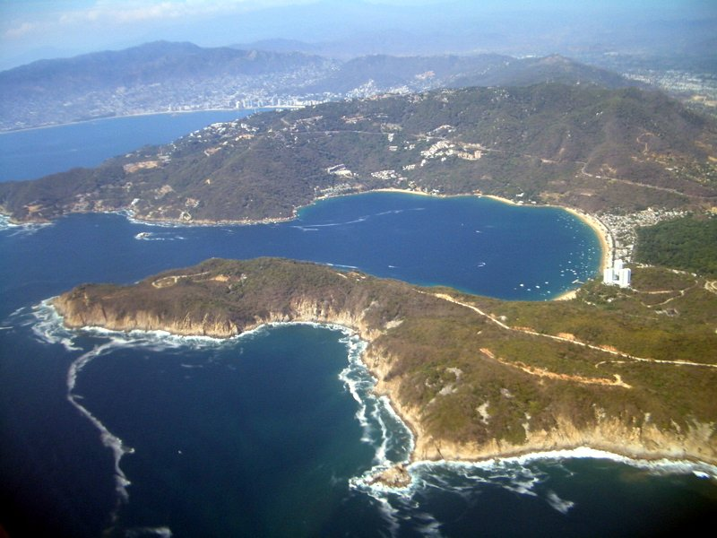

तूफ़ान Trudy मेक्सिको के प्रशांत तट से दूर जाना शुरू, तूफ़ान चेतावनी हटाई गई
मेक्सिको ने रविवार को प्लाया पेरुला से काबो कोरिएंतेस तक की तूफ़ान चेतावनी को उष्णकटिबंधीय तूफ़ान चेतावनी में बदला और प्लाया पेरुला के दक्षिण की चेतावनियां हटा दीं, मौसमविदों ने कहा। Trudy श्रेणी 2 पर बना रहा, हवाएं 165 किलोमीटर प्रति घंटा, मंज़ानिलो से करीब 265 किलोमीटर पश्चिम में, और तेज़ी से कमज़ोर होने का अनुमान है।

मुख्य बिंदु
- अपडेट किया गया 18:16 UTC, 18 अक्टूबर 2026। तूफ़ान Trudy के दूर जाना शुरू करने पर मेक्सिको ने अपने प्रशांत तट के लिए तूफ़ान चेतावनी हटा दी, अमेरिकी राष्ट्रीय तूफ़ान केंद्र ने अपने 15:00 UTC बुलेटिन…
- अपडेट 16:46 UTC, 18 अक्टूबर 2026। तूफ़ान Trudy ने रविवार तड़के मेक्सिको के दक्षिणपश्चिमी और पश्चिम मध्य प्रशांत तट के कुछ हिस्सों में भारी बारिश और तेज़ हवाएं लाईं, जबकि यह श्रेणी 2 की ताक़त पर…
- 10:12 UTC, 18 अक्टूबर 2026 पर अपडेट किया गया। तूफ़ान Trudy शनिवार को फिर श्रेणी 2 में मज़बूत हो गया, मेक्सिको के पश्चिम मध्य प्रशांत तट की ओर बढ़ते हुए, अमेरिकी राष्ट्रीय तूफ़ान केंद्र ने कहा।…
अपडेट किया गया 18:16 UTC, 18 अक्टूबर 2026। तूफ़ान Trudy के दूर जाना शुरू करने पर मेक्सिको ने अपने प्रशांत तट के लिए तूफ़ान चेतावनी हटा दी, अमेरिकी राष्ट्रीय तूफ़ान केंद्र ने अपने 15:00 UTC बुलेटिन में कहा। केंद्र ने Trudy को मंज़ानिलो से करीब 265 किलोमीटर पश्चिम में और काबो कोरिएंतेस से करीब 185 किलोमीटर दक्षिणपश्चिम में रखा, अधिकतम लगातार हवाएं 165 किलोमीटर प्रति घंटा, रफ़्तार 13 किलोमीटर प्रति घंटा उत्तरपश्चिम की ओर और न्यूनतम दबाव 970 मिलिबार। मेक्सिको सरकार ने प्लाया पेरुला से काबो कोरिएंतेस तक की तूफ़ान चेतावनी को उष्णकटिबंधीय तूफ़ान चेतावनी में बदला और प्लाया पेरुला के दक्षिण की सभी चेतावनियां हटा दीं। अब प्लाया पेरुला से सान ब्लास तक और लास इस्लास मारियास के लिए उष्णकटिबंधीय तूफ़ान चेतावनी लागू है, Associated Press ने रिपोर्ट किया। मौसमविदों ने कहा, Trudy रविवार दोपहर मेक्सिको के दक्षिणपश्चिमी और पश्चिम मध्य हिस्से से दूर जाएगा, फिर सोमवार और मंगलवार को धीरे धीरे बाजा कैलिफ़ोर्निया सुर के दक्षिण की ओर बढ़ेगा। हवा की कतरनी बढ़ने और शुष्क हवा पहुंचने से रविवार को बाद में तेज़ी से कमज़ोर होना शुरू होने की उम्मीद है, और अनुमान है कि Trudy करीब 60 घंटों में पोस्ट ट्रॉपिकल बन जाएगा और तीन से चार दिनों में खत्म हो जाएगा। मिचोआकान, कोलिमा और जालिस्को में भारी बारिश, खतरनाक लहरों और बाढ़ तथा भूस्खलन का जोखिम बना है, वर्षा 10 से 20 सेंटीमीटर और कुछ जगहों पर करीब 30 सेंटीमीटर तक।
अपडेट 16:46 UTC, 18 अक्टूबर 2026। तूफ़ान Trudy ने रविवार तड़के मेक्सिको के दक्षिणपश्चिमी और पश्चिम मध्य प्रशांत तट के कुछ हिस्सों में भारी बारिश और तेज़ हवाएं लाईं, जबकि यह श्रेणी 2 की ताक़त पर बना रहा और तट के समानांतर आगे बढ़ा, Reuters ने अमेरिकी राष्ट्रीय तूफ़ान केंद्र के हवाले से रिपोर्ट किया। केंद्र ने Trudy को मंज़ानिलो से करीब 240 किलोमीटर पश्चिम में रखा, अधिकतम लगातार हवाएं 165 किलोमीटर प्रति घंटा और रफ़्तार करीब 17 किलोमीटर प्रति घंटा उत्तरपश्चिम की ओर। कोलिमा के मंज़ानिलो से जालिस्को के काबो कोरिएंतेस तक तूफ़ान चेतावनी जारी रही, और लास इस्लास मारियास के लिए उष्णकटिबंधीय तूफ़ान चेतावनी भी जारी रही। मौसमविदों ने कहा कि रविवार सुबह ताक़त में ज़्यादा बदलाव की उम्मीद नहीं है, लेकिन रविवार रात से तेज़ी से कमज़ोर होना शुरू होगा। Trudy के रविवार शाम तक तट के पास रहने, फिर रात भर में कमज़ोर होकर सोमवार और मंगलवार को बाजा कैलिफ़ोर्निया सुर के दक्षिण की ओर बढ़ने की उम्मीद है। बारिश ही मुख्य ख़तरा है: मिचोआकान, कोलिमा और जालिस्को के कुछ हिस्सों में 10 से 20 सेंटीमीटर, कुछ जगहों पर करीब 30 सेंटीमीटर तक, जिससे जानलेवा बाढ़ और भूस्खलन का जोखिम बढ़ा है, ख़ासकर ढलान वाली ज़मीन पर। केंद्र ने उन जगहों पर ख़तरनाक तूफ़ानी लहर और विनाशकारी लहरों की भी चेतावनी दी जहां हवाएं तट की ओर बहती हैं।
10:12 UTC, 18 अक्टूबर 2026 पर अपडेट किया गया। तूफ़ान Trudy शनिवार को फिर श्रेणी 2 में मज़बूत हो गया, मेक्सिको के पश्चिम मध्य प्रशांत तट की ओर बढ़ते हुए, अमेरिकी राष्ट्रीय तूफ़ान केंद्र ने कहा। केंद्र ने शनिवार दोपहर Trudy की अधिकतम निरंतर हवाएं 155 किलोमीटर प्रति घंटा रखीं, तूफ़ान मंज़ानिलो से करीब 180 किलोमीटर दक्षिण दक्षिणपश्चिम में और करीब 17 किलोमीटर प्रति घंटा की रफ़्तार से उत्तरपश्चिम की ओर बढ़ रहा था। कोलिमा राज्य के मंज़ानिलो से जालिस्को के काबो कोरिएंतेस तक तूफ़ान चेतावनी लागू रही, और मेक्सिको ने लास इस्लास मारियास के लिए उष्णकटिबंधीय तूफ़ान चेतावनी जारी की, जबकि लाज़ारो कार्डेनास के दक्षिण तट की ऐसी ही चेतावनी हटा दी। मौसमविदों ने कहा कि Trudy रात भर थोड़ा और मज़बूत हो सकता है, रविवार से कमज़ोर होने से पहले। तूफ़ान से सप्ताहांत भर मिचोआकान, कोलिमा और जालिस्को के कुछ हिस्सों में 10 से 20 सेंटीमीटर बारिश होने की उम्मीद है, कुछ जगहों पर करीब 30 सेंटीमीटर तक, जिससे बाढ़ और भूस्खलन का जोखिम बढ़ा है। मेक्सिको की नौसेना ने नाविकों और तटीय निवासियों से ऊंची लहरों और भारी बारिश में अत्यंत सावधानी बरतने का आग्रह किया।
16:09 UTC पर अपडेट किया गया। तूफ़ान Trudy शनिवार, 17 अक्टूबर की तड़के श्रेणी 1 की ताकत पर बना रहा, मेक्सिको के पश्चिमी तट की ओर बढ़ते हुए, अमेरिकी राष्ट्रीय तूफ़ान केंद्र ने Reuters की रिपोर्टिंग में कहा। केंद्र ने शनिवार तड़के Trudy को मंज़ानिलो से करीब 305 किलोमीटर दक्षिण दक्षिणपूर्व में रखा, अधिकतम निरंतर हवाएं 150 किलोमीटर प्रति घंटा और रफ़्तार करीब 13 किलोमीटर प्रति घंटा। यह शुक्रवार, 16 अक्टूबर को केंद्र द्वारा बताई गई श्रेणी 3 की ताकत से काफी नीचे है।
अनुमान है कि Trudy शनिवार को बाद में दक्षिणपश्चिमी और पश्चिम मध्य मेक्सिको के पास पहुंचेगा और रात भर रविवार, 18 अक्टूबर तक तट के पास से गुजरेगा। कोलिमा राज्य के मंज़ानिलो से जालिस्को के काबो कोरिएंतेस तक तूफ़ान चेतावनी लागू है, Associated Press ने बताया। चेतावनी क्षेत्र में शनिवार रात तूफ़ान के हालात अपेक्षित हैं, और शनिवार के दौरान पूरे क्षेत्र में उष्णकटिबंधीय तूफ़ान के हालात फैलने चाहिए।
बारिश मुख्य खतरा है। मौसमविदों को सप्ताहांत भर मिचोआकान, कोलिमा और जालिस्को के कुछ हिस्सों में 100 से 200 मिलिमीटर बारिश, अलग थलग कुल करीब 380 मिलिमीटर तक, की उम्मीद है, जिससे जानलेवा बाढ़ और भूस्खलन का जोखिम बढ़ता है, खासकर ढलान वाली ज़मीन पर। बाहरी पट्टियों से गुरेरो और नायारित में 50 से 100 मिलिमीटर, अलग थलग कुल करीब 150 मिलिमीटर तक, बारिश हो सकती है। मौसमविदों ने तूफ़ान की लहर से तटीय बाढ़, बड़ी और विनाशकारी लहरों, और दक्षिणपश्चिमी तट के कुछ हिस्सों को पहले से प्रभावित कर रही और सप्ताहांत भर उत्तर की ओर फैलने वाली लहरों की भी चेतावनी दी, जानलेवा सर्फ और रिप करंट के साथ।
नीचे दी गई पिछली रिपोर्ट तब लिखी गई थी जब Trudy श्रेणी 3 की ताकत पर था।
10:48 UTC पर अपडेट किया गया। Trudy अब एक बड़ा तूफ़ान है। राष्ट्रीय तूफ़ान केंद्र ने शुक्रवार, 16 अक्टूबर के 09:00 UTC बुलेटिन में तूफ़ान को श्रेणी 3 में रखा, अधिकतम निरंतर हवाएं 195 किलोमीटर प्रति घंटा और झोंके 240 किलोमीटर प्रति घंटा तक। केंद्र ने न्यूनतम दबाव 956 मिलिबार बताया, जो एक दिन पहले के 989 मिलिबार से कम है।
बुलेटिन के समय Trudy का केंद्र 14.2 डिग्री उत्तर और 102.4 डिग्री पश्चिम के पास था, अकापुल्को से करीब 420 किलोमीटर दक्षिणपश्चिम में और मंज़ानिलो से करीब 590 किलोमीटर दक्षिण दक्षिणपूर्व में। तूफ़ान करीब 9 किलोमीटर प्रति घंटा की रफ़्तार से उत्तरपश्चिम की ओर बढ़ रहा था, और उसकी आंख करीब 28 किलोमीटर चौड़ी थी।
मौसमविदों को उम्मीद है कि Trudy शुक्रवार और शनिवार को और मज़बूत होगा, शनिवार, 17 अक्टूबर को शीर्ष हवाएं करीब 230 किलोमीटर प्रति घंटा तक पहुंचेंगी, जब आंख शनिवार को मेक्सिको के दक्षिणपश्चिमी और पश्चिम मध्य तट के पास पहुंचेगी। उस तट के कुछ हिस्सों के लिए तूफ़ान निगरानी और उष्णकटिबंधीय तूफ़ान चेतावनी लागू हैं। केंद्र ने सप्ताहांत भर गुरेरो से जालिस्को तक भारी बारिश की चेतावनी दी है, मिचोआकान, कोलिमा और जालिस्को में बाढ़ और भूस्खलन के जोखिम के साथ, और तट पर खतरनाक लहरों और रिप करंट के जोखिम के साथ।
Associated Press ने शुक्रवार तड़के श्रेणी 3 की ताकत की रिपोर्ट की। यह अपडेट नीचे दी गई मूल रिपोर्ट के अनुमान की जगह लेता है, जो तब लिखी गई थी जब Trudy श्रेणी 1 तूफ़ान था और बड़ी ताकत अभी अनुमान ही थी।
Trudy गुरुवार, 15 अक्टूबर की शुरुआत में श्रेणी 1 तूफ़ान में मज़बूत हो गया, अमेरिकी राष्ट्रीय तूफ़ान केंद्र ने अपने 09:00 UTC बुलेटिन में कहा। तूफ़ान के तेज़ी से बढ़ने और इस सप्ताहांत में बड़े तूफ़ान के रूप में मेक्सिको के दक्षिणपश्चिमी तट तक पहुंचने का अनुमान है।
बुलेटिन के समय Trudy मेक्सिको के अकापुल्को से करीब 480 किलोमीटर दक्षिण दक्षिणपश्चिम में और मंज़ानिलो से करीब 735 किलोमीटर दक्षिण दक्षिणपूर्व में था। अधिकतम निरंतर हवाएं 120 किलोमीटर प्रति घंटा थीं, तेज़ झोंकों के साथ। केंद्र ने न्यूनतम दबाव 989 मिलिबार बताया।
अनुमानित रास्ता
Trudy करीब 15 किलोमीटर प्रति घंटा की रफ़्तार से उत्तरपश्चिम की ओर बढ़ रहा था। मौसमविदों को अगले एक दो दिनों में उत्तर उत्तरपश्चिम की ओर मोड़ और फिर इस सप्ताहांत में वापस उत्तरपश्चिम की ओर मोड़ की उम्मीद है। उस रास्ते पर तूफ़ान सप्ताहांत में मेक्सिको के दक्षिणपश्चिमी और पश्चिम मध्य तट के पास पहुंचेगा।
बुलेटिन के समय कोई तटीय निगरानी या चेतावनी लागू नहीं थी। केंद्र ने कहा कि गुरुवार सुबह बाद में उस तट के कुछ हिस्सों के लिए निगरानी की ज़रूरत पड़ सकती है, और वहां के लोगों से तूफ़ान पर बारीकी से नज़र रखने को कहा।
आगे तेज़ मज़बूती
केंद्र अगले दो दिनों में तेज़ मज़बूती का अनुमान लगाता है, Trudy शुक्रवार, 16 अक्टूबर को बड़ा तूफ़ान बन जाएगा। तूफ़ान बल की हवाएं केंद्र से करीब 35 किलोमीटर तक और उष्णकटिबंधीय तूफ़ान बल की हवाएं करीब 185 किलोमीटर तक फैली हैं।
बारिश निकट का खतरा है। केंद्र को सप्ताहांत में कोलिमा और जालिस्को में 100 से 200 मिलिमीटर बारिश, अलग थलग कुल करीब 300 मिलिमीटर तक, की उम्मीद है। बाहरी पट्टियों से गुएरेरो से मिचोआकान तक के तट पर 50 से 100 मिलिमीटर, अलग थलग कुल करीब 150 मिलिमीटर तक, बारिश होगी। मौसमविदों ने चेतावनी दी कि बारिश बाढ़ और भूस्खलन ला सकती है, खासकर ढलान वाली ज़मीन पर।
Trudy की लहरें अगले एक दिन में दक्षिणपश्चिमी तट के कुछ हिस्सों तक पहुंचेंगी, खतरनाक सर्फ और रिप करंट के जोखिम के साथ।
अब भी उबरता तट
गुएरेरो राज्य ने गुरुवार, 15 अक्टूबर के लिए राज्य भर में स्कूल बंद कर दिए और आपात तैयारी शुरू कर दी, राज्य नागरिक सुरक्षा रिपोर्टिंग के अनुसार शुक्रवार और शनिवार को भारी बारिश चिंता का विषय है।
नया तूफ़ान उस तट पर पहुंचा है जो पिछले तूफ़ान से अब भी साफ हो रहा है। तूफ़ान Simon और उष्णकटिबंधीय तूफ़ान Rachel के अवशेषों से जुड़ी बाढ़ ने इस हफ़्ते मेक्सिको में छह लोगों की जान ली, पांच बाजा कैलिफ़ोर्निया के एनसेनाडा में और एक गुएरेरो में। उस तूफ़ान में बंद हुई पुएर्तो वायार्ता के आसपास की सड़कें 13 अक्टूबर तक फिर खुल गई थीं।
Trudy 13 अक्टूबर को प्रशांत महासागर में उष्णकटिबंधीय अवदाब के रूप में बना, और उसी दिन अकापुल्को से करीब 790 किलोमीटर दक्षिण दक्षिणपूर्व में 65 किलोमीटर प्रति घंटा हवाओं के साथ उष्णकटिबंधीय तूफ़ान बन गया। दो दिन बाद यह तूफ़ान है, और केंद्र को ज़मीन के पास पहुंचने से पहले इसके और बढ़ने की उम्मीद है।
स्रोत
राष्ट्रीय तूफ़ान केंद्र का बुलेटिन 8 और पूर्वानुमान चर्चा, अमेरिकी माध्यमों द्वारा छापी गई Associated Press रिपोर्टिंग, और USA TODAY का बुलेटिन अनुगमन, नीचे दिए गए हैं।
टाइमलाइन
- Oct 13, 2026ट्रुडी प्रशांत महासागर में उष्णकटिबंधीय अवदाब के रूप में बनता है और उसी दिन उष्णकटिबंधीय तूफान बन जाता है, अकापुल्को से लगभग 490 मील दक्षिण-दक्षिणपूर्व में, 40 mph की हवाओं के साथ।
- Oct 15, 2026ट्रुडी 09:00 UTC पर श्रेणी 1 का हरिकेन बन जाता है, अकापुल्को से लगभग 300 मील दक्षिण-दक्षिणपश्चिम में, 75 mph की हवाओं के साथ। गेरेरो उस दिन के लिए राज्य भर के स्कूल बंद कर देता है।
- Oct 16, 2026Trudy 09:00 UTC पर श्रेणी 3 बड़े तूफ़ान में मज़बूत होता है, हवाएं 195 किलोमीटर प्रति घंटा और दबाव 956 मिलिबार, अकापुल्को से करीब 420 किलोमीटर दक्षिणपश्चिम में। तट के कुछ हिस्सों के लिए तूफ़ान निगरानी और उष्णकटिबंधीय तूफ़ान चेतावनी लागू हैं।
- Oct 17, 2026Trudy शनिवार तड़के श्रेणी 1 पर बना रहता है, मंज़ानिलो से करीब 305 किलोमीटर दक्षिण दक्षिणपूर्व में 150 किलोमीटर प्रति घंटा हवाओं के साथ, 16 अक्टूबर की श्रेणी 3 से नीचे। मंज़ानिलो से काबो कोरिएंतेस तक तूफ़ान चेतावनी लागू है, और अनुमान है कि तूफ़ान शनिवार को बाद में तट के पास पहुंचेगा और रात भर रविवार, 18 अक्टूबर तक पास से गुजरेगा।
- Oct 17, 2026Trudy शनिवार दोपहर फिर श्रेणी 2 में मज़बूत होता है, हवाएं 155 किलोमीटर प्रति घंटा, मंज़ानिलो से करीब 180 किलोमीटर दक्षिण दक्षिणपश्चिम में, करीब 17 किलोमीटर प्रति घंटा की रफ़्तार से उत्तरपश्चिम की ओर बढ़ते हुए। मंज़ानिलो से काबो कोरिएंतेस तक तूफ़ान चेतावनी लागू है, और मौसमविदों को उम्मीद है कि तूफ़ान रविवार, 18 अक्टूबर को कमज़ोर होगा।
- Oct 18, 2026Trudy रविवार तड़के मेक्सिको के दक्षिणपश्चिमी और पश्चिम मध्य प्रशांत तट पर श्रेणी 2 की ताक़त से असर डालता है, मंज़ानिलो से करीब 240 किलोमीटर पश्चिम में, हवाएं 165 किलोमीटर प्रति घंटा, रफ़्तार 17 किलोमीटर प्रति घंटा उत्तरपश्चिम की ओर। मौसमविदों को उम्मीद है कि तूफ़ान रविवार शाम तक तट के पास रहेगा, फिर रविवार रात से तेज़ी से कमज़ोर होकर सोमवार और मंगलवार को बाजा कैलिफ़ोर्निया सुर के दक्षिण की ओर बढ़ेगा।
- Oct 18, 2026Trudy के दूर जाना शुरू करने पर मेक्सिको तूफ़ान चेतावनी हटाता है। 15:00 UTC पर Trudy मंज़ानिलो से करीब 265 किलोमीटर पश्चिम में है, हवाएं 165 किलोमीटर प्रति घंटा, रफ़्तार 13 किलोमीटर प्रति घंटा उत्तरपश्चिम की ओर। प्लाया पेरुला से सान ब्लास तक और लास इस्लास मारियास के लिए उष्णकटिबंधीय तूफ़ान चेतावनी लागू है।
स्रोत
- National Hurricane Center: Hurricane Trudy Public Advisory Number 8, 09:00 UTC Oct 15, 2026
- Associated Press via The Reflector: Trudy strengthens to a hurricane as system nears Mexico coast
- USA TODAY: Track Hurricane Trudy as storm could rapidly intensify
- National Hurricane Center: Hurricane Trudy Forecast Advisory Number 12, 09:00 UTC Oct 16, 2026
- Associated Press via KCAU 9: Hurricane Trudy strengthens to a Category 3 storm off Mexico's Pacific coast
- Reuters: Hurricane Trudy threatens western Mexico with heavy rain, coastal flooding, Oct 17, 2026
- Associated Press: Hurricane Trudy approaches Mexico as Typhoon Champi threatens Guam, Oct 17, 2026
- Associated Press via New York Post: Hurricane Trudy strengthens to Category 2 on approach to Mexico coast, Oct 17, 2026
- Reuters via Devdiscourse: Hurricane Trudy gains strength near Mexico's coast, but is expected to weaken by Sunday, Oct 17, 2026
- Reuters: Hurricane Trudy lashes Mexico's Pacific coast, but is set to weaken tonight, Oct 18, 2026
- Associated Press via Fresh Blog News: Hurricane Trudy brings heavy rain and strong winds to Mexico's Pacific coast, Oct 18, 2026
- National Hurricane Center: Hurricane Trudy archive, Advisory Number 21, 15:00 UTC Oct 18, 2026
- Associated Press via The Reflector: Hurricane Trudy brings heavy rain and strong winds to Mexico's Pacific coast, Oct 18, 2026